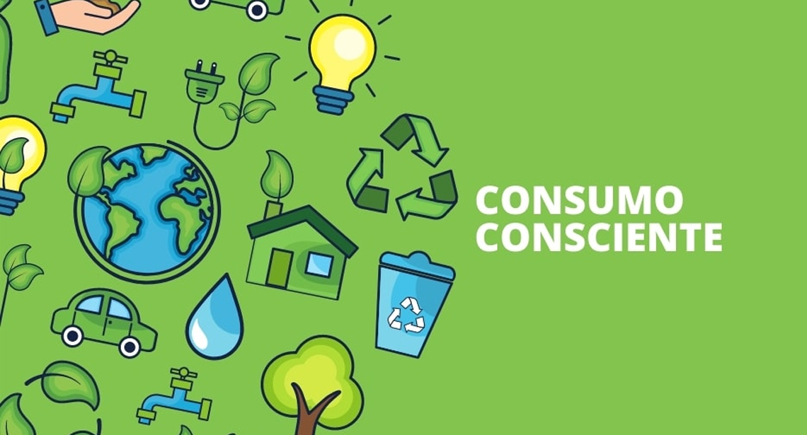

Entendendo o Consumo Consciente
Compreendendo o Impacto e os Benefícios de Nossas Escolhas
- O que é Consumo Consciente?: Consumo consciente é comprar de forma responsável, considerando o impacto no meio ambiente e na sociedade, para reduzir danos e promover o bem-estar.
- Impactos Ambientais e Sociais: O consumo excessivo causa poluição, esgotamento de recursos naturais e perpetua desigualdades sociais, prejudicando o meio ambiente e a qualidade de vida das pessoas.
- Benefícios do Consumo Consciente: O consumo consciente preserva o meio ambiente, apoia práticas éticas e promove um estilo de vida mais equilibrado e sustentável.
Práticas de Consumo Consciente
Como Adotar um Consumo Consciente no Dia a Dia
- Escolhas Sustentáveis: Escolhas sustentáveis envolvem preferir produtos ecológicos, reutilizáveis e duráveis, reduzindo o impacto ambiental e promovendo um consumo mais responsável.
- Redução, Reutilização e Reciclagem: Redução, reutilização e reciclagem são práticas que minimizam o desperdício: reduzir o consumo desnecessário, reutilizar materiais sempre que possível e reciclar o que não pode ser reaproveitado.
- Consumo Local e Ético: Consumo local e ético significa apoiar pequenos produtores e empresas que seguem práticas justas e sustentáveis, reduzindo a pegada de carbono e promovendo a economia local.
Como Começar a Mudar Hoje
Como Iniciar sua Jornada para um Consumo Consciente
- Pequenas Ações, Grandes Mudanças: Pequenas ações, como reduzir o uso de plásticos descartáveis e optar por produtos orgânicos, podem gerar grandes mudanças ao longo do tempo e ajudar a tornar seu consumo mais sustentável.
- Recursos e Ferramentas: Recursos e ferramentas incluem aplicativos, sites e livros que ajudam a adotar práticas de consumo consciente, oferecendo dicas, informações e suporte para um estilo de vida mais sustentável.
- Oportunidades de Networking: Conectar-se com comunidades e grupos focados em consumo consciente, como eventos, fóruns e redes sociais, pode oferecer suporte, trocar ideias e promover iniciativas sustentáveis.